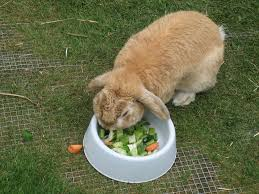
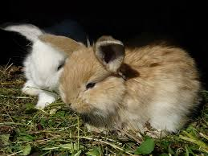

Rabbit Supplies
Rabbit Tunnel-This rabbit tunnel is the perfect hang out spot for your pet. It is a good place for your rabbit to snack or nap.
Rabbit blocks-These rabbit blocks help keep your pets teeth from growing to long. These blocks file down rabbit teeth
Rabbit Hutch-This rabbit hutch is an out door escape for your pet. It has an very insulating fleece lining.
Rabbit Truck-This rabbit truck has a very small motor. Your rabbit can do laps around your yard in it with no effort!
Rabbit Food

Rabbit Treat Blend-This rabbit treat blend is homemade! The vegetables come from our home garden. It is the best refreshing treat for your rabbit.

Rabbit Hay-Rabbit hay is a staple food for healthy rabbits. Our rabbit hay comes from the Atlanta, Georgia;rated number one for their rabbit hay production.